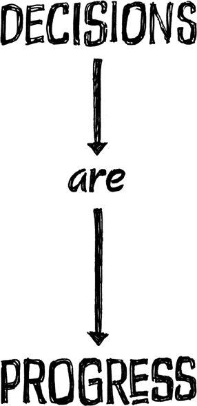

{% include JB/setup %}
{% raw %}
<div>

<h2 id="filepos85513" class="calibre19"><span class="calibre2"><a class="calibre13"></a><strong class="calibre14">Ignore the details early on</strong></span></h2><div class="calibre4"></div>
<p class="calibre7">Architects don't worry about which tiles go in the shower or which brand of dishwasher to install in the kitchen until <em class="italic1">after</em> the floor plan is finalized. They know it's better to decide these details later.</p>
<p class="calibre17">You need to approach your idea the same way. Details make the difference. But getting infatuated with details too early leads to disagreement, meetings, and delays. You get lost in things that don't really matter. You waste time on decisions that are going to change anyway. So ignore the details--for a while. Nail the basics first and worry about the specifics later.</p>
<p class="calibre17">When we start designing something, we sketch out ideas with a big, thick Sharpie marker, instead of a ballpoint pen. Why? Pen points are too fine. They're too high-resolution. They encourage you to worry about things that you shouldn't worry about yet, like perfecting the shading or whether to use a dotted or dashed line. You end up focusing on things that should still be out of focus.</p>
<p class="calibre17">A Sharpie makes it impossible to drill down that deep. You can only draw shapes, lines, and boxes. That's good. The big picture is all you should be worrying about in the beginning.</p>
<p class="calibre17">Walt Stanchfield, famed drawing instructor for Walt <a class="calibre16"></a>Disney Studios, used to encourage animators to "forget the detail" at first. The reason: Detail just doesn't buy you anything in the early stages.<a id="filepos87397" class="calibre16"></a><a href="Rework_split_040.html#filepos106801" class="calibre9"><sup class="calibre20"><span class="calibre6">*</span></sup></a></p>
<p class="calibre17">Besides, you often can't recognize the details that matter most until <em class="italic1">after</em> you start building. That's when you see what needs more attention. You feel what's missing. And that's when you need to pay attention, not sooner.</p>
<p class="calibre3"><a class="calibre16"></a></p><div class="calibre4"></div>
</div>

{% endraw %}

